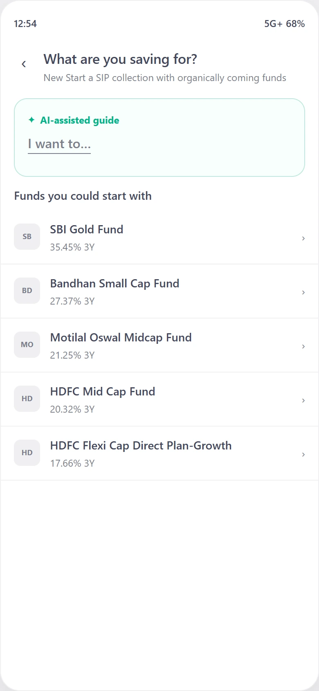
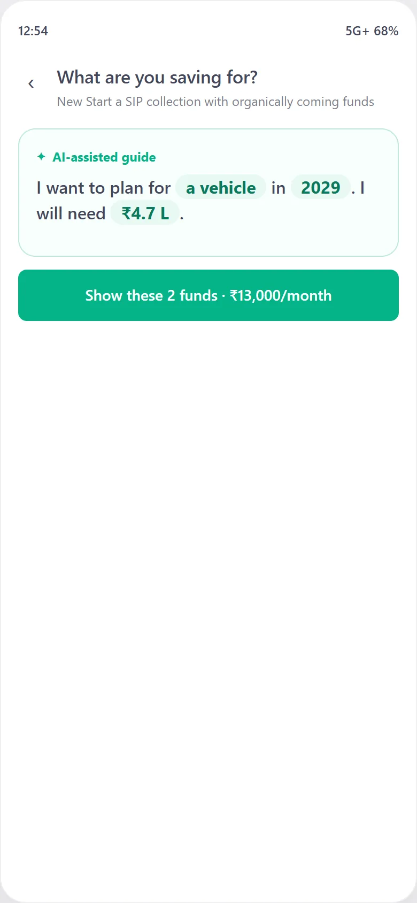
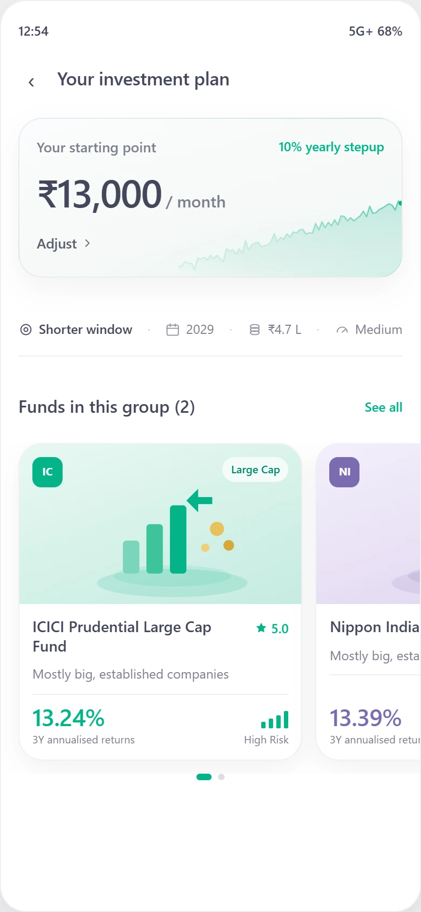

The missing step between opening Groww and starting a SIP
Everyone I interviewed who started a SIP had someone say it was fine.
This puts that go-ahead inside Groww.
- Product
- Groww
- Type
- Feature addition
- Stage
- Prototype, user tested